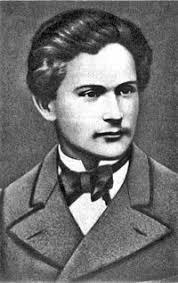

|
|
Франко, Иван Яковлевич
(укр. Іван Якович Франко; 27 августа 1856, с. Нагуевичи — 28 мая 1916, Львов)
|
Ива́н Я́ковлевич Франко́
Ива́н Я́ковлевич Франко́ — украинский писатель, поэт, учёный, публицист и деятель революционного социалистического движения в королевстве Галиции и Лодомерии
(Австро-Венгерской империи). Значительная часть произведений была написана на украинском, польском, немецком и русском языках.
В 1915 году был выдвинут на получение Нобелевской премии,но преждевременная смерть помешала рассмотрению его кандидатуры.
Один из инициаторов основания «Русско-украинской радикальной партии» (позже «Украинская радикальная партия» — УРП), действовавшей на
территории Австрии. В честь Франко город Станислав переименован в Ивано-Франковск, а во Львовской области пгт Янов — в Ивано-Франково.
Больше в википедии

Перейти по ссылке
|
|
Став співробітником польської газети "Kurier Lwowski". Починається період десятилітньої
(1887 - 97) праці в польській і німецькій пресі, який Франко назвав "в наймах у сусідів". 1888 р. - Літом І. Франка втретє
заарештовують разом із групою київських студентів, що приїхали на екскурсію до Галичини, звинувачений у пропаганді
ідеї визволення Галичини з-під влади Австрії та приєднання її до Росії. В тюрмі написав оповідання
"До світла" і цикл "Тюремні сонати".
1890 р. - Разом з М. Павликом стає співзасновником Русько-Української Радикальної партії та видає двотижневик "Народ".
Вийшла збірка оповідань "В поті чола".
1891-1893 рр. - Продовжує студії у Чернівецькому, а потім Віденському університетах. Виступає на вічах у різних містах.
1893 - 28 червня Франкові у Відні було присуджено вчений ступінь доктора філософських наук за дисертацію "Варлаам і Йосаф"
- старохристиянський духовний роман і його літературна історія".
1894-97 рр. - Разом з дружиною Ольгою видав журнал "Життє і слово", в якому серед інших з'явилася його стаття
"Соціалізм і соціал-демократизм"
(1897) з гострою критикою української соціал-демократії й соціалізму Маркса і Енгельса. Критику марксизму,
як "релігії, основаної на догмах ненависті і класової боротьби" Франко продовжив у передмові до збірки
"Мій ізмарагд" (1898).
|
1895 - 22 березня Франко успішно прочитав у Львівському університеті пробну лекцію на тему
"Наймичка" Т. Г. Шевченка на звання доцента укр. літератури, але через опір намісника Бадені та
галицьких реакційних кіл цієї посади не отримав. Не був обраний і до парламенту.
1896 р. - Вийшла збірка "Зів'яле листя", що є вершиною інтимної лірики поета.
1898 р. - Однодумці Франка М. Павлик, В. Гнатюк, Н. Кобринська та ін. урочисто відзначили 25-ліття
його літературної і суспільно-політичної діяльності. Вийшов "Спис творів І. Франка за перше 25-ліття
його літературної діяльності 1874-98", складений М. Павликом.
28 травня Іван Франко помер у Львові і 31 травня похований на Личаківському кладовищі.
Пам'ятник на його могилі було відкрито тільки у 1933 р.
|
|